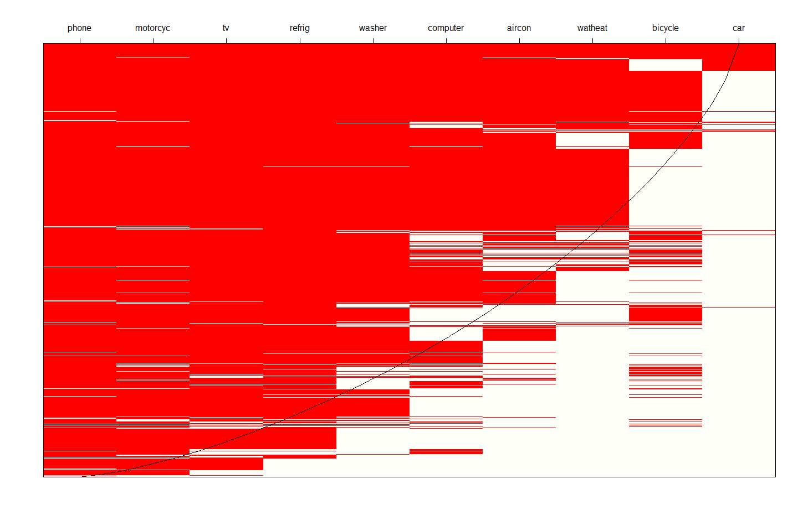

Code
library(tidyverse)
library(lubridate)
library(janitor)
library(stringi)
library(patchwork)
library(vegan)
invisible(Sys.setlocale("LC_TIME", "English"))
df_raw <- readRDS("D:/OUCRU/assigned github/vac_coverage/data/vaxreg_hcmc_measles.rds")library(tidyverse)
library(lubridate)
library(janitor)
library(stringi)
library(patchwork)
library(vegan)
invisible(Sys.setlocale("LC_TIME", "English"))
df_raw <- readRDS("D:/OUCRU/assigned github/vac_coverage/data/vaxreg_hcmc_measles.rds")## data cleaning
df <- df_raw %>% na.omit() %>%
subset(date_m1 > dob &
date_m2 > dob &
date_m1 < date_m2 &
year(date_m2) <= 2024 &
year(date_m1) >= min(year(df_raw$dob))) Vaccine shortage public started in May 2022 source
## vaccine coverage 1st and 2nd dose
date_compute <- seq(as.Date("2022-09-01"),as.Date("2024-11-20"),by = "weeks")
## second dose
out_fn <- data.frame()
for (i in 1:length(date_compute)){
cov <- df %>%
mutate(
age = decimal_date(date_compute[i]) - decimal_date(dob),
is_m2 = if_else(date_m2 <= date_compute[i], 1, 0)) %>%
filter(age >= 1, age <= 5) %>%
summarise(m2 = sum(is_m2, na.rm = T), n = n(), cov = m2/n)
cov_2w <- df %>%
mutate(
age = decimal_date(date_compute[i]) - decimal_date(dob),
is_m2 = if_else(date_m2 <= date_compute[i] %m-% weeks(2), 1, 0)) %>%
filter(age >= 1 + 0.5/12, age <= 5 + 0.5/12) %>%
summarise(m2 = sum(is_m2, na.rm = T), n = n(), cov = m2/n)
out <- data.frame(date = as.Date(date_compute[i]),
cov = as.numeric(cov$cov),
cov_2w = as.numeric(cov_2w$cov))
out_fn <- rbind(out_fn,out)
}
## first dose
out_fn1 <- data.frame()
for (i in 1:length(date_compute)){
cova <- df %>%
mutate(
age = decimal_date(date_compute[i]) - decimal_date(dob),
is_m1 = if_else(date_m1 <= date_compute[i], 1, 0)) %>%
filter(age >= 0.75, age <= 5) %>%
summarise(m1 = sum(is_m1, na.rm = T), n = n(), cov = m1/n)
cov_2wa <- df %>%
mutate(
age = decimal_date(date_compute[i]) - decimal_date(dob),
is_m1 = if_else(date_m1 <= date_compute[i] %m-% weeks(2), 1, 0)) %>%
filter(age >= 0.75 + 0.5/12, age <= 5 + 0.5/12) %>%
summarise(m1 = sum(is_m1, na.rm = T), n = n(), cov = m1/n)
outa <- data.frame(date = as.Date(date_compute[i]),
cov = as.numeric(cova$cov),
cov_2w = as.numeric(cov_2wa$cov))
out_fn1 <- rbind(out_fn1,outa)
}
## plot
vac_co <- ggplot()+
geom_line(data = out_fn,aes(x = date,y = cov*100,color="2"))+
geom_line(data = out_fn1,aes(x = date,y = cov*100,color="1"))+
scale_y_continuous(limits = c(0, 100), breaks = seq(0,100,by = 10)) +
labs(x = "Date",y = "Vaccine coverage (%)")+
scale_x_date(breaks = "4 month",
date_labels= "%b %Y",
limits = c(as.Date("2022-09-01"),as.Date("2024-11-20")))+
theme(axis.text.x = element_text(angle = 45,size = 8,
hjust=1))+
scale_color_manual(name="Dose", values=c("1"="red", "2"="blue"))+
theme_bw()
vac_co2w <-ggplot()+
geom_line(data = out_fn,aes(x = date,y = cov_2w*100,color="2"))+
geom_line(data = out_fn1,aes(x = date,y = cov_2w*100,color="1"))+
scale_y_continuous(limits = c(0, 100), breaks = seq(0,100,by = 10)) +
labs(x = "Date",y = "Vaccine coverage with 2-week hypothesis (%)")+
scale_x_date(breaks = "4 month",
date_labels= "%b %Y",
limits = c(as.Date("2022-09-01"),as.Date("2024-11-20")))+
theme(axis.text.x = element_text(angle = 45,size = 8,
hjust=1))+
scale_color_manual(name="Dose", values=c("1"="red", "2"="blue"))+
theme_bw()vac_co | vac_co2w
district <- unique(df$district)
out_d <- data.frame()
out_d1 <- data.frame()
for (k in 1:length(district)){
dfd <- df %>% filter(district == district[k])
for (i in 1:length(date_compute)){
cov <- dfd %>%
mutate(
age = decimal_date(date_compute[i]) - decimal_date(dob),
is_m2 = if_else(date_m2 <= date_compute[i], 1, 0)) %>%
filter(age >= 1, age <= 5) %>%
summarise(m2 = sum(is_m2, na.rm = T), n = n(), cov = m2/n)
cov_2w <- dfd %>%
mutate(
age = decimal_date(date_compute[i]) - decimal_date(dob),
is_m2 = if_else(date_m2 <= date_compute[i] %m-% weeks(2), 1, 0)) %>%
filter(age >= 1 + 0.5/12, age <= 5 + 0.5/12) %>%
summarise(m2 = sum(is_m2, na.rm = T), n = n(), cov = m2/n)
out_d1 <- data.frame(district = as.character(district[k]),
date = as.Date(date_compute[i]),
cov = as.numeric(cov$cov),
cov_2w = as.numeric(cov_2w$cov))
out_d <- rbind(out_d,out_d1)
}
}
meancv <- out_d %>%
group_by(district) %>%
summarise(mean = mean(cov))
sorted <- meancv[order(-meancv$mean),]
vac_cov <- out_d %>% mutate(dis = factor(district,
levels = as.character(sorted$district))) %>%
ggplot()+
geom_line(aes(x = date,y = cov*100,color="2"))+
scale_y_continuous(limits = c(0, 100), breaks = seq(0,100,by = 10)) +
labs(x = "Date",y = "Vaccine coverage (%)")+
scale_x_date(breaks = "4 months",
date_labels= "%b %Y",
limits = c(as.Date("2022-09-01"),as.Date("2024-11-20")))+
facet_wrap(vars(dis),ncol = 1)+
scale_color_manual(name="Dose", values=c("1"="red", "2"="blue"))+
theme_bw()+
theme(axis.text.x = element_text(angle = 45,size = 8,hjust=1),
axis.text.y = element_text(size = 6))week <- seq(as.Date("2022-05-01"),as.Date("2024-07-01"),by = "month")
dttlv <- df[,c("dob","district","date_m1","date_m2")]
out_timely <- data.frame()
for (k in 1:length(district)){
td <- subset(dttlv, district == district[k])
for (i in 1:length(week)){
td$lackd <- week[i]
td$ageuntil <- decimal_date(td$lackd) - decimal_date(td$dob)
## subset children aged from 9 months to 9 months 2 weeks at chosen time
slec <- td[td$ageuntil >= 0.75 & td$ageuntil <= 0.75 + 0.5*(1/12),]
slec$agevac <- decimal_date(slec$date_m1) - decimal_date(slec$dob)
slec$vac_on_date1 <- ifelse(slec$agevac < slec$ageuntil + 1/12,1,0)
slec$vac_on_date1 <- replace(slec$vac_on_date, is.na(slec$vac_on_date1),0)
re <- slec %>% group_by(vac_on_date1) %>% count()
if(nrow(re) == 1){
re[2,] <- re[1,]
re[1,1] <- 0
re[1,2] <- 0
}
cus <- data.frame(district = district[k],
date = week[i],
per = as.numeric(re[2,2])/(as.numeric(re[2,2])+as.numeric(re[1,2])))
out_timely <- rbind(out_timely,cus)
}
}ipsum <- read_csv("data/GEO1_VN2019_79.csv")
ipsum$district <- case_when(
ipsum$GEO2_VN == 704079760 ~ "Qun 1",
ipsum$GEO2_VN == 704079761 ~ "Qun 12",
ipsum$GEO2_VN == 704079762 ~ "Th c",
ipsum$GEO2_VN == 704079763 ~ "Th c",
ipsum$GEO2_VN == 704079764 ~ "G Vp",
ipsum$GEO2_VN == 704079765 ~ "Bnh Thnh",
ipsum$GEO2_VN == 704079766 ~ "Tn Bnh",
ipsum$GEO2_VN == 704079767 ~ "Tn Ph",
ipsum$GEO2_VN == 704079768 ~ "Ph Nhun",
ipsum$GEO2_VN == 704079769 ~ "Th c",
ipsum$GEO2_VN == 704079770 ~ "Qun 3",
ipsum$GEO2_VN == 704079771 ~ "Qun 10",
ipsum$GEO2_VN == 704079772 ~ "Qun 11",
ipsum$GEO2_VN == 704079773 ~ "Qun 4",
ipsum$GEO2_VN == 704079774 ~ "Qun 5",
ipsum$GEO2_VN == 704079775 ~ "Qun 6",
ipsum$GEO2_VN == 704079776 ~ "Qun 8",
ipsum$GEO2_VN == 704079777 ~ "Bnh Tn",
ipsum$GEO2_VN == 704079778 ~ "Qun 7",
ipsum$GEO2_VN == 704079783 ~ "C Chi",
ipsum$GEO2_VN == 704079784 ~ "Hc Mn",
ipsum$GEO2_VN == 704079785 ~ "Bnh Chnh",
ipsum$GEO2_VN == 704079786 ~ "Nh B",
ipsum$GEO2_VN == 704079787 ~ "Cn Gi") %>%
stri_trans_general("latin-ascii") %>%
str_remove_all("Quan") %>%
trimws(which = "both")
## census for denominator
hcm19 <- readRDS("D:/OUCRU/hfmd/data/census2019.rds") %>%
filter(province == "Thnh ph H Ch Minh")
hcm19$district <- hcm19$district %>%
str_remove_all("Qun|Huyn") %>%
str_replace_all(
c("\\b2\\b|\\b9\\b" = "Th c")) %>%
stri_trans_general("latin-ascii") %>%
trimws(which = "both")
popdis <- hcm19 %>% group_by(district) %>%
summarise(n = sum(n))
districtc <- popdis$district## function to calculate percentage of each district
scale_per <- function(data){
ou <- data.frame()
for (i in 1:22){
oo <- data %>% filter(district == districtc[i]) %>%
mutate(pop = rep(as.numeric(popdis$n[popdis$district == districtc[i]])),
per = (n/pop)*100)
ou <- rbind(ou,oo)
}
return(ou)
}## Level of education or training currently attending
ipsum$edu <- case_when(
ipsum$VN2019A_SCHOOLLEV == 99 ~ "NIU",
ipsum$VN2019A_SCHOOLLEV == 1 ~ "Pre-school below 5 years old",
ipsum$VN2019A_SCHOOLLEV == 2 ~ "Pre-school at 5 years old",
ipsum$VN2019A_SCHOOLLEV == 3 ~ "Primary",
ipsum$VN2019A_SCHOOLLEV == 4 ~ "Lower secondary",
ipsum$VN2019A_SCHOOLLEV == 5 ~ "Higher secondary",
ipsum$VN2019A_SCHOOLLEV == 6 ~ "Pre-intermediate",
ipsum$VN2019A_SCHOOLLEV == 7 ~ "Intermediate",
ipsum$VN2019A_SCHOOLLEV == 8 ~ "College",
ipsum$VN2019A_SCHOOLLEV == 9 ~ "University",
ipsum$VN2019A_SCHOOLLEV == 10 ~ "Master",
ipsum$VN2019A_SCHOOLLEV == 11 ~ "Ph.D. (doctorate)") %>%
factor(levels = c("NIU",
"Pre-school below 5 years old",
"Pre-school at 5 years old",
"Primary",
"Lower secondary",
"Higher secondary",
"Pre-intermediate",
"Intermediate",
"College",
"University",
"Master",
"Ph.D. (doctorate)")
)
hcm_edu <- ipsum %>% group_by(district,edu) %>% count()
edu <- scale_per(hcm_edu) %>% filter(edu != "NIU") %>%
mutate(dis = factor(district,
levels = as.character(sorted$district))) %>%
ggplot() +
geom_col(aes(x = per,
y = edu)) +
facet_wrap(vars(dis),
# scales = "free",
ncol = 1)+
labs(x = "Percentage of total population(%)",
y = "Education")+
theme_light()+
theme(axis.text.x = element_text(size = 10),
axis.text.y = element_text(size = 8))
## Employment status
ipsum$employ <- case_when(
ipsum$VN2019A_EMPSTAT == 1 ~ "Employed",
ipsum$VN2019A_EMPSTAT == 2 ~ "Unemployed",
ipsum$VN2019A_EMPSTAT == 3 ~ "Inactive",
ipsum$VN2019A_EMPSTAT == 4 ~ "Overseas",
ipsum$VN2019A_EMPSTAT == 9 ~ "NIU") %>%
factor(levels = c("Employed",
"Unemployed",
"Inactive",
"Overseas",
"NIU")
)
hcm_employ <- ipsum %>% group_by(district,employ) %>% count()
employ <- scale_per(hcm_employ) %>% filter(employ != "NIU") %>%
mutate(dis = factor(district,
levels = as.character(sorted$district))) %>%
ggplot() +
geom_col(aes(x = per,
y = employ)) +
facet_wrap(vars(dis),
# scales = "free",
ncol = 1)+
labs(x = "Percentage of total population(%)",
y = "Employment status")+
theme_light()+
theme(axis.text.x = element_text(size = 15),
axis.text.y = element_text(size = 15))
##Number of sons living in household
ipsum$son_in_house <- as.character(ipsum$VN2019A_CHHOMEM)
ipsum$son_in_house <- ifelse(ipsum$son_in_house == "0","None",
ifelse(ipsum$son_in_house == "7","7+",
ifelse(ipsum$son_in_house == "99","NIU",
ipsum$son_in_house)))
hcm_sih <- ipsum %>% group_by(district,son_in_house) %>% count()
##Number of daughter living in household
ipsum$dau_in_house <- as.character(ipsum$VN2019A_CHHOMEF)
ipsum$dau_in_house <- ifelse(ipsum$dau_in_house == "0","None",
ifelse(ipsum$dau_in_house == "7","7+",
ifelse(ipsum$dau_in_house == "99","NIU",
ipsum$dau_in_house)))
hcm_dih <- ipsum %>% group_by(district,dau_in_house) %>% count()
son_dau <- full_join(scale_per(hcm_sih) %>% select(district,son_in_house,per),
scale_per(hcm_dih) %>% select(district,dau_in_house,per),
by = c("district" = "district",
"son_in_house" = "dau_in_house"))
colnames(son_dau) <- c("district","num_child","son","daughter")
hcm_child<- son_dau %>% pivot_longer(cols=c('son', 'daughter'),
names_to='sex',
values_to='per')
hcm_child$per <- replace(hcm_child$per, is.na(hcm_child$per), 0)
hcm_child <- hcm_child %>% mutate(
per2 = case_when(
sex == "daughter" ~ -per,
TRUE ~ per
))
hcm_childa <- hcm_child %>% filter(num_child != "NIU")
pop_range <- range(hcm_childa$per2 %>% na.omit())
pop_range_breaks <- pretty(pop_range, n = 6)
chil <- hcm_child %>% filter(num_child != "NIU") %>%
mutate(dis = factor(district,
levels = as.character(sorted$district))) %>%
ggplot() +
geom_col(aes(x = per2,
y = num_child,
fill = sex)) +
scale_x_continuous(breaks = pop_range_breaks,
labels = abs(pop_range_breaks))+
facet_wrap(vars(dis),
# scales = "free",
ncol = 1)+
theme_light()+
labs(x = "Percentage of total population(%)",
y = "Number of children")
## Faith or religion
ipsum$reli <- case_when(
ipsum$VN2019A_RELIG2 == 99 ~ "NIU",
ipsum$VN2019A_RELIG2 == 1 ~ "Buddhism",
ipsum$VN2019A_RELIG2 == 2 ~ "Catholic",
ipsum$VN2019A_RELIG2 == 3 ~ "Evangelical",
ipsum$VN2019A_RELIG2 == 4 ~ "Caodaism",
ipsum$VN2019A_RELIG2 == 5 ~ "Hoa Hao Buddhism",
ipsum$VN2019A_RELIG2 == 6 ~ "Islamic",
ipsum$VN2019A_RELIG2 == 7 ~ "Bahai Faith",
ipsum$VN2019A_RELIG2 == 8 ~ "Pure Land Buddhist Association of Vietnam",
ipsum$VN2019A_RELIG2 == 9 ~ "Tu An Hieu Nghia (Four Debts of Gratitude) Buddhism",
ipsum$VN2019A_RELIG2 == 11 ~ "Cham Brahmin",
ipsum$VN2019A_RELIG2 == 12 ~ "Church of Jesus Christ of Latter-day Saints (Mormon)",
ipsum$VN2019A_RELIG2 == 13 ~ "Hieu Nghia Ta Lon Buddhism (Registration Granted)",
ipsum$VN2019A_RELIG2 == 14 ~ "Vietnam Seventh-day Adventist Church") %>%
factor(levels = c("NIU",
"Buddhism",
"Catholic",
"Evangelical",
"Caodaism",
"Hoa Hao Buddhism",
"Islamic",
"Bahai Faith",
"Pure Land Buddhist Association of Vietnam",
"Tu An Hieu Nghia (Four Debts of Gratitude) Buddhism",
"Cham Brahmin",
"Church of Jesus Christ of Latter-day Saints (Mormon)",
"Hieu Nghia Ta Lon Buddhism (Registration Granted)",
"Vietnam Seventh-day Adventist Church")
)
hcm_reli <- ipsum %>% group_by(district,reli) %>% count()
reli <- scale_per(hcm_reli) %>% filter(reli != "NIU" & per >=0.1) %>%
mutate(dis = factor(district,
levels = as.character(sorted$district))) %>%
ggplot() +
geom_col(aes(x = per,
y = reli)) +
facet_wrap(vars(dis),
# scales = "free",
ncol = 1)+
labs(x = "Percentage of total population(%)",
y = "Religion")+
theme_light()+
theme(axis.text.x = element_text(size = 15),
axis.text.y = element_text(size = 15)) # Delay distribution
dttlv$date_m1_ontime <- dttlv$dob %m+% months(9)
dttlv$delay <- interval(dttlv$date_m1_ontime,dttlv$date_m1) / months(1)
## Delay distribution of HCMC
dttlv %>% na.omit() %>%
filter(delay > 0 & date_m1_ontime >= as.Date("2022-05-01")
& date_m1_ontime <= as.Date("2023-12-31")) %>%
ggplot(aes(x=delay)) +
geom_density()+
labs(x = "Month")## Each districts with demographic variables
meandl <- dttlv %>% na.omit() %>%
filter(delay > 0 & date_m1_ontime >= as.Date("2022-05-01")
& date_m1_ontime <= as.Date("2023-12-31")) %>%
group_by(district) %>%
summarise(median = median(delay,na.rm = T))
vac_dl <- dttlv %>%
mutate(dis = factor(district,
levels = as.character(sorted$district))) %>%
filter(delay > 0 & date_m1_ontime >= as.Date("2022-05-01")
& date_m1_ontime <= as.Date("2023-12-31")) %>%
ggplot(aes(x=delay)) +
geom_density()+
labs(x = "Month")+
xlim(0,5)+
facet_wrap(vars(dis),ncol = 1)+
theme_bw()+
theme(axis.text.x = element_text(angle = 45,size = 8,
hjust=1))
##
month <- seq(as.Date("2022-05-01"),as.Date("2024-01-01"),by = "month")
dis2 <- dttlv$district %>% unique()
uot <- data.frame()
uot2 <- data.frame()
for (k in 1:length(dis2)){
dtd <- dttlv %>% filter(district == dis2[k])
for (i in 1:(length(month)-1)){
emon <- dtd %>% na.omit() %>%
filter(date_m1_ontime >= month[i] &
date_m1_ontime <= month[i+1] &
delay > 0)
uot2 <- data.frame(district = dis2[k],
month = month[i],
del = median(emon$delay))
uot <- rbind(uot,uot2)
}
}
month_delay <- uot %>%
mutate(dis = factor(district,
levels = as.character(sorted$district))) %>%
ggplot(aes(x = month,y=del)) +
geom_bar(stat = "identity")+
labs(x = "Month", y = "The median of delayed month")+
facet_wrap(vars(dis),ncol = 1)+
scale_x_date(breaks = "2 months",
date_labels= "%b %Y")+
theme_bw()+
theme(axis.text.x = element_text(angle = 45,size = 8,
hjust=1)) vac_cov | time_vac | vac_dl | month_delay | edu | employ | reli | chil 
ipsum$tv <- ifelse(ipsum$VN2019A_TV == 1,1,0)
ipsum$radio <- ifelse(ipsum$VN2019A_RADIO == 1,1,0)
ipsum$computer <- ifelse(ipsum$VN2019A_COMPUTER == 1,1,0)
ipsum$phone <- ifelse(ipsum$VN2019A_PHONE == 1,1,0)
ipsum$refrig <- ifelse(ipsum$VN2019A_REFRIG == 1,1,0)
ipsum$washer <- ifelse(ipsum$VN2019A_WASHER == 1,1,0)
ipsum$watheat <- ifelse(ipsum$VN2019A_WATHEAT == 1,1,0)
ipsum$aircon <- ifelse(ipsum$VN2019A_AIRCON == 1,1,0)
ipsum$motorcyc <- ifelse(ipsum$VN2019A_MOTORCYC == 1,1,0)
ipsum$bicycle <- ifelse(ipsum$VN2019A_BIKE == 1,1,0)
ipsum$car <- ifelse(ipsum$VN2019A_CAR == 1,1,0)
wealth_index <- ipsum[,c("district","tv","radio","computer","phone",
"refrig","washer","watheat","aircon","motorcyc",
"bicycle","car")]
d1 <- nestedtemp(wealth_index[,-1])
plot(d1, kind="incid",names = TRUE,ylab="",yaxt="n",las=1)